| 日付 | 2026年5月30日（土） - 2026年5月31日（日） | ||||
|---|---|---|---|---|---|
| 山域 | 尾瀬 | ||||
| メンバー | 家族（妻） | ||||
| 山行形態 | 1泊2日テント泊 | ||||
| アクセス | 車 | ||||
| ルート (Map) |
|
2日目
3時からガサゴソする人が出だして目が覚めてしまう。
予定より15分早い4:15に起床。
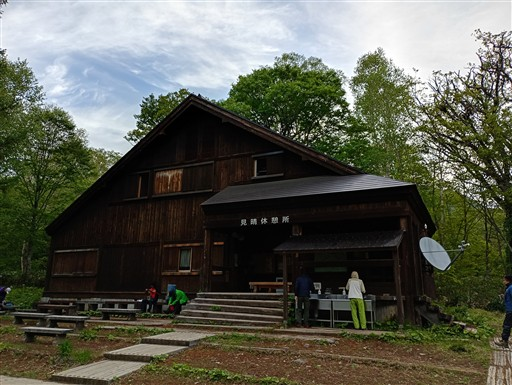
早朝の尾瀬。快晴ではないが展望はある。
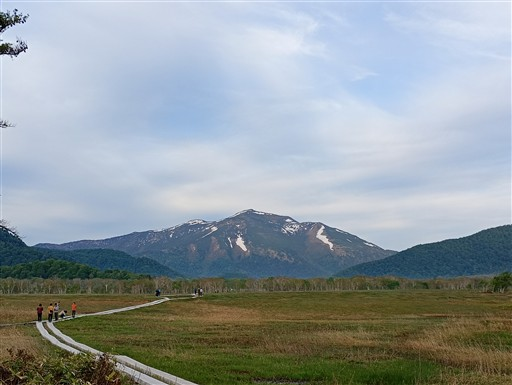
本日は燧ヶ岳登山。見晴新道は難易度が高いので、
安全のため長英新道から登ることにする。まずは尾瀬沼に向かう。
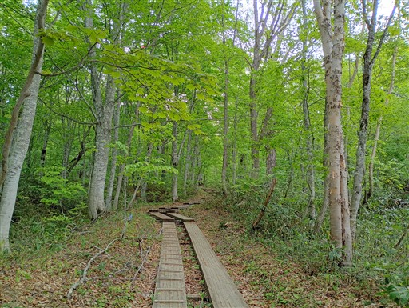
ねじれた大木。なんと18年前と同じ木を撮影していた。
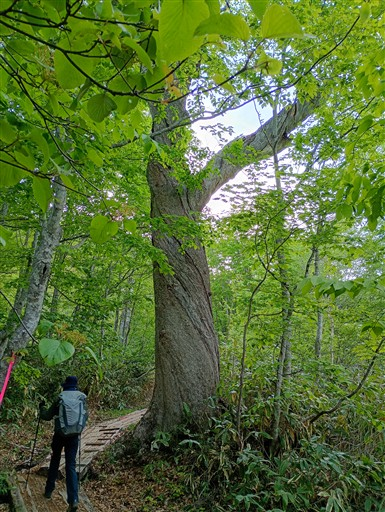
白砂峠に到着。
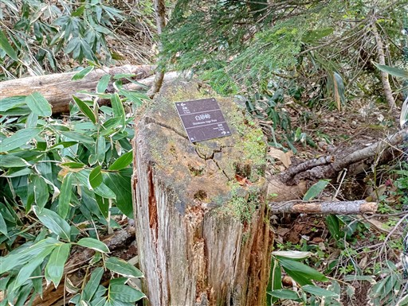
白砂湿原に到着。尾瀬ヶ原より200mほど標高が高いこの場所は、
ミズバショウがまだきれいだ。
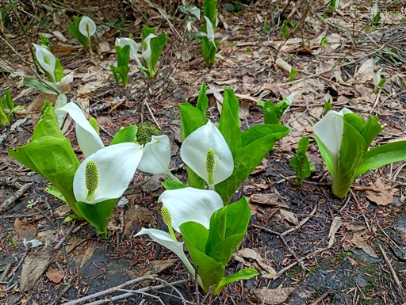
サクラとミズバショウ。花びらはほとんど散っているが、まだサクラが咲いている。
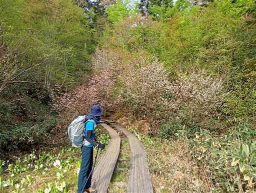
池塘は森の景色を映していて美しい。
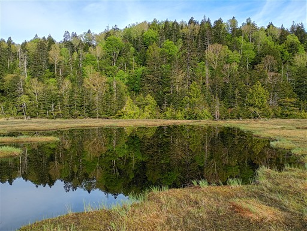
タテヤマリンドウ。陽の光がないので花は閉じている。
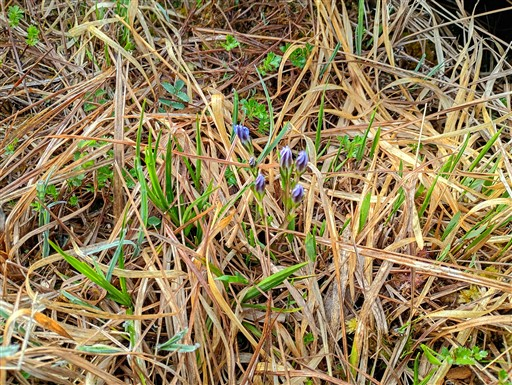
沼尻付近のミズバショウ。
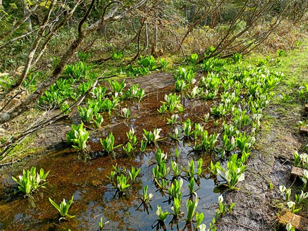
沼尻付近の池塘。古い木道が伸びている。
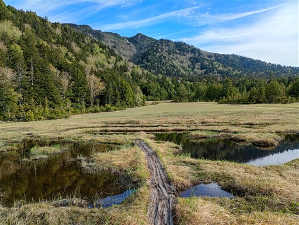
池塘とその向こうに見えているのは尾瀬沼。右手は沼尻休憩所。
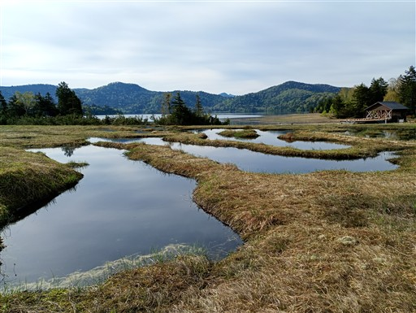
尾瀬沼の畔を歩く。もう少し空が青かったらより美しかったのだが。
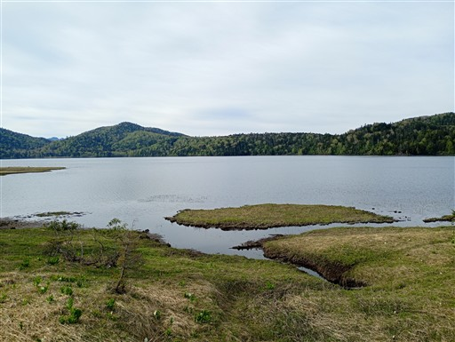
森の中は大きな木があちらこちらで見られる。
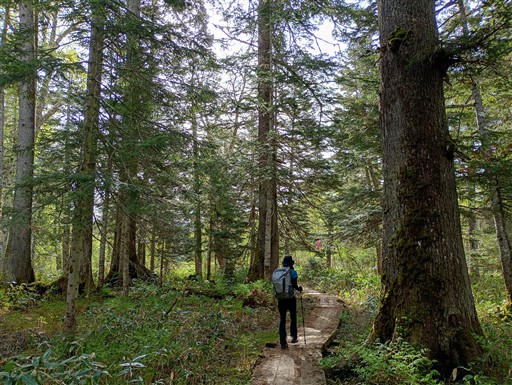
ミズバショウと合わせてバイケイソウもよく見かける。
調べたところ、バイケイソウの数は昔よりも増えているらしい。
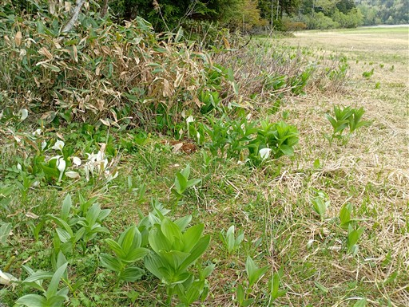
長英新道分岐に到着。ここから本格的な登山道だ。
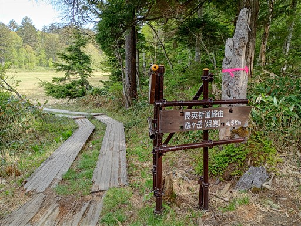
と言っても、最初な緩やかな傾斜の道から始まる。
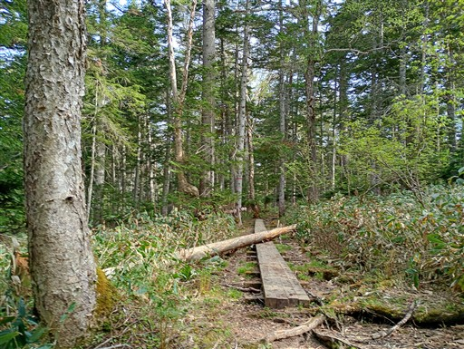
2合目を通過。若干の雪が出てくる。
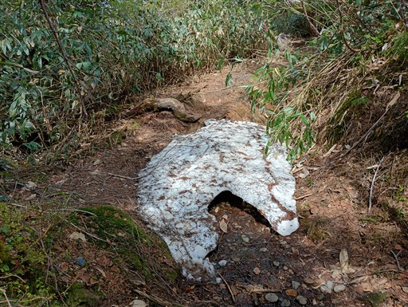
3合目を過ぎると傾斜がだんだんときつくなってくる。
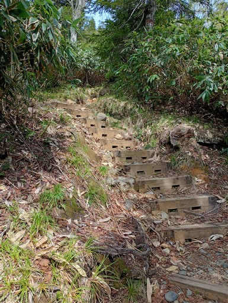
イワナシの花が所々で咲いている。
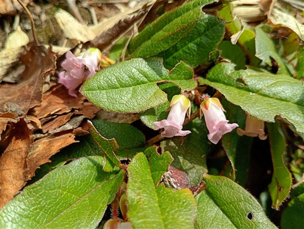
展望台に到着。尾瀬沼が眼下に見える。背後の高い山は日光白根山。
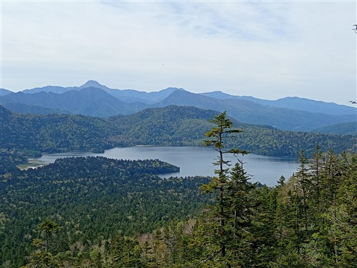
岩だらけの急斜面の登山道。
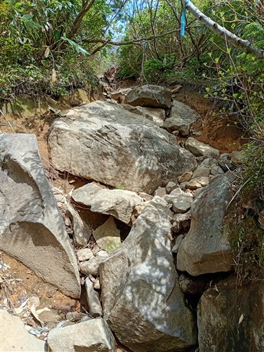
5合目を過ぎると本格的に雪の上を歩く場所が出てくる。
長くは続かない。
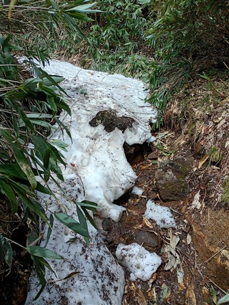
ミノブチ岳に到着。右手に見える俎嵓まであと僅かだ。
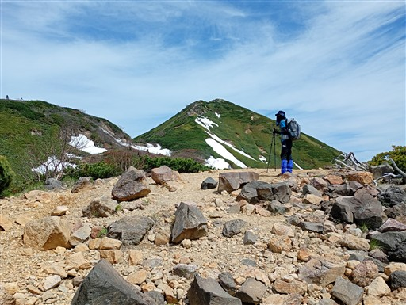
山頂からは素晴らしい展望が広がる。
尾瀬沼の全体像が見渡せる。
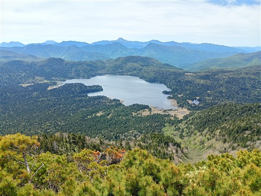
右は上州武尊山、左は赤城山だ。
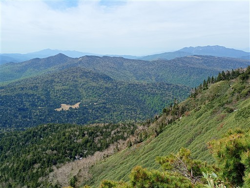
ハイマツとシャクナゲが広がる道を歩いていく。
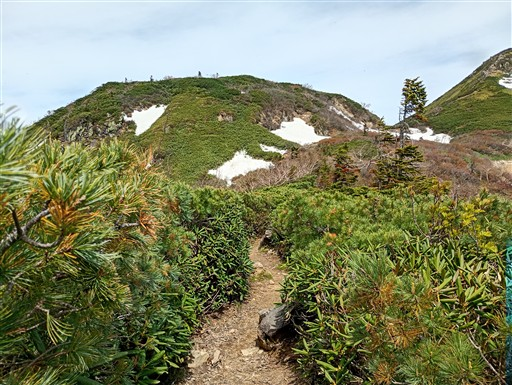
山頂直下は雪の上を歩く。
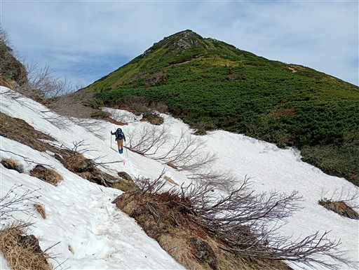
柴安嵓も見えてくる。雪の上を歩いている人が見える。
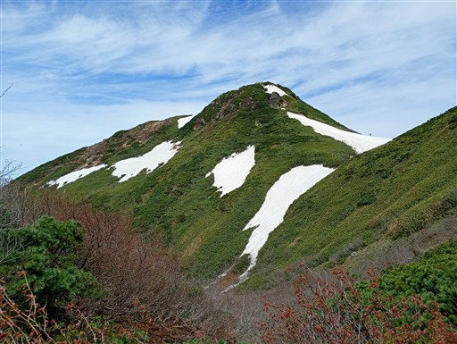
最後は岩だらけの道。
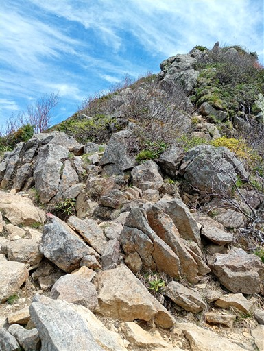
燧ヶ岳俎嵓に到着。
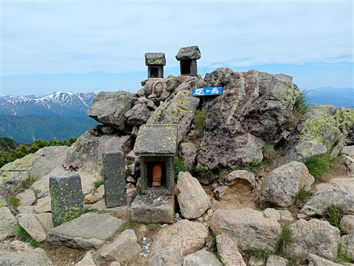
山頂に咲くミヤマキンバイ。
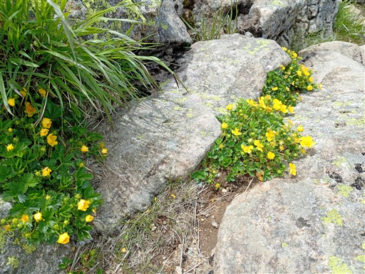
山頂からの展望は素晴らしい。至仏山と尾瀬ヶ原が見える。
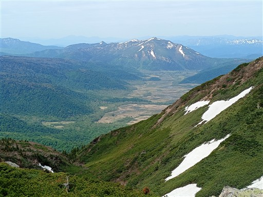
こちらは平ヶ岳をはじめとした越後の山々。
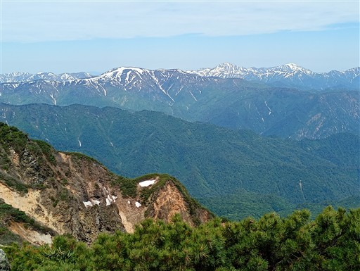
目の前に聳える柴安嵓。
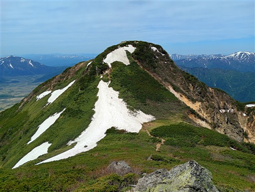
眼下に見える噴火口のあるピークは御池岳。登山道は残念ながらない。
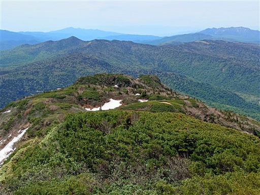
柴安嵓直下の残雪は難易度が高いので、荷物を置いて自分一人で往復する。
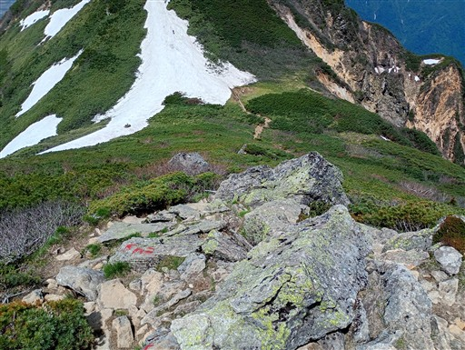
鞍部に下りてくる。
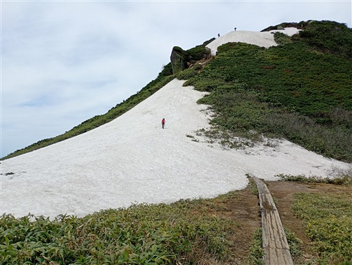
この辺りが核心部。登りは良いが、下りはちょっと怖かった。
雪はそれほど固くないのでアイゼンは付けずツボ足で。
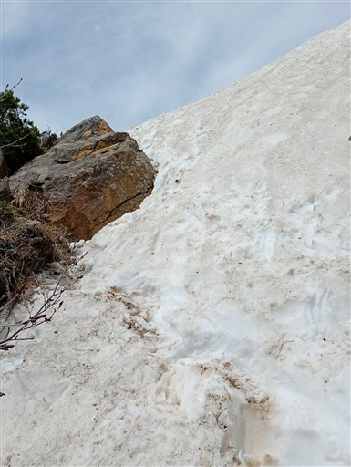
燧ヶ岳柴安嵓に到着。標高2356m。
三角点があるのは俎嵓だが、最高地点はこちら。
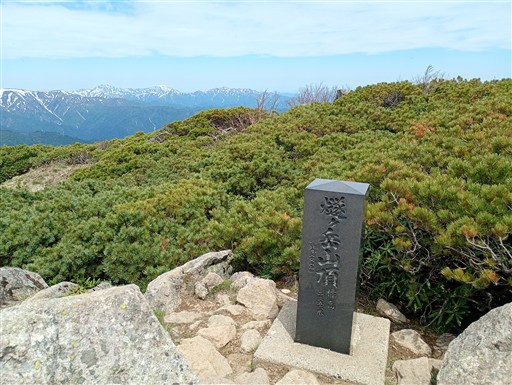
山頂の風景。人は少ない。
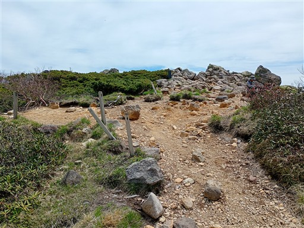
展望は抜群。こちらからは至仏山と尾瀬ヶ原が完璧に見渡せる。
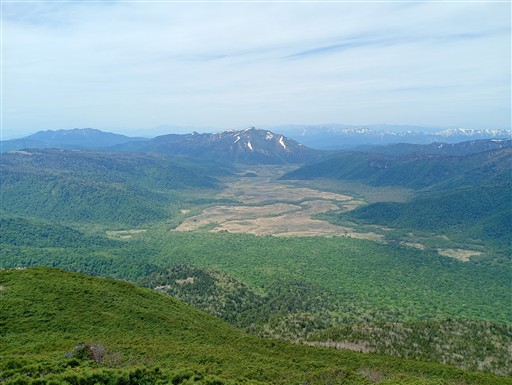
越後の山々も遮るものなくパノラマが広がる。
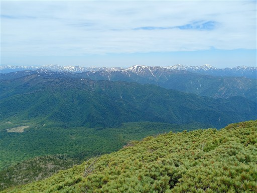
左は荒沢岳、右の方は守門岳、浅草岳だ。
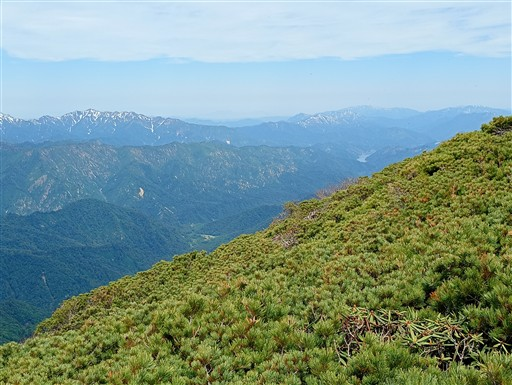
会津駒ヶ岳。
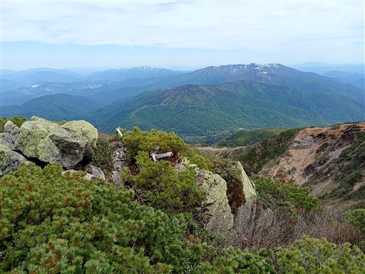
俎嵓は柴安嵓ほど格好良い形はしていない。
さっと展望を眺めたら、元来た道を戻る。
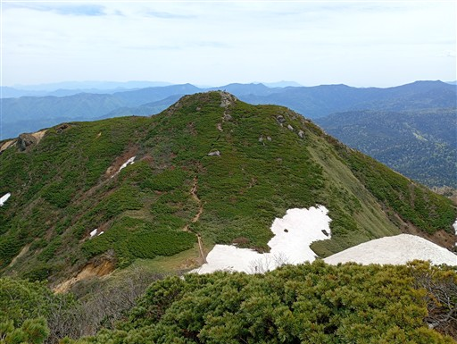
俎嵓に戻ったら下山開始。
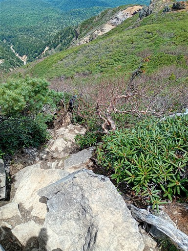
御池に下る道は北側斜面のため、雪が豊富に残っている。
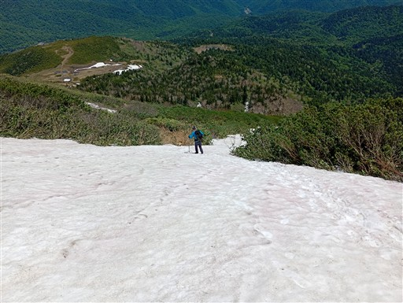
慎重に下る。
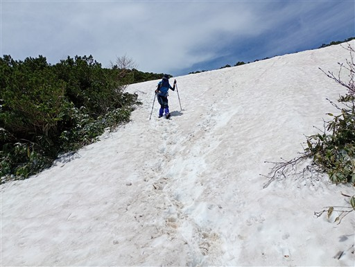
眼下に見える湿原は熊沢田代。
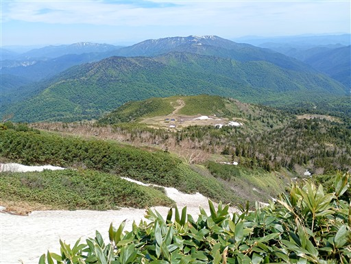
何度か雪渓を横切る。
その後は長い雪渓下り。傾斜が緩いので下りやすい。
木の階段と雪がミックスしていてちょっと嫌らしい場所。
雪がない場所は雪解け水で登山道が川のようだ。
まるでアスレチックのような木道。崩壊してボロボロだが、一応上を歩ける。
熊沢田代に近づいてくる。
静寂が支配する熊沢田代に到着。
空を映して真っ青な池塘。風があってちょっと波ができている。
反対側にも池塘。背景に越後の山々が並んでいるのがまた美しい。
振り返ると燧ヶ岳。本当に風光明媚なところだ。
こちらの道は人がほとんどいないのも素晴らしい。
緩やかな傾斜を登る。
僅かながら、気の早いチングルマが咲いている。
イワカガミも少しだけ咲いている。
メタメタな木道は続く。基本的に木道から外れずに、上を歩いていく。
シャクナゲの花が咲いている。
木段の途中の水たまりにカエルの卵発見。
水の流入が少なそうな場所だが、無事カエルになれるだろうか？
眼下に次なる湿原、広沢田代が見えてきた。
木段はところどころ、段が抜けている。危険な段は取り除かれているのだろう。
右を行くか、左を行くか…
歩きやすい右ではなく、安全な左を選択。
広沢田代に出てくる。
ミズバショウとタテヤマリンドウの競演。
この辺りも木道が崩壊。シーソーのようになっている板もあり、ここもアスレチック。
シャクナゲはあちらこちらで咲いている。まだ咲き初めで非常に美しい。
美しい池塘。ここは風が弱く、水面が鏡のようだ。
この辺りだけ木道がきれいに整備されている。
お金の問題で一気にすべて交換という訳にはいかないのだろう。
最後は急斜面の下りがしばらく続く。
とても鮮やかな色のツツジ。ムラサキヤシオだろうか？ピンクリボンより目立っている。
ここのミズバショウはもう巨大な葉に生長している。
往路で通った道と合流。久々に戻ってきた感じがする。
そして御池駐車場にゴール。
荷物は重かったが素晴らしい山行だった。燧裏林道も、尾瀬ヶ原も、燧ヶ岳も素晴らしかった。
花も展望も満喫できたし、晴れの日だから訪れたので当たり前だけれど天候にも恵まれた。
家族での初のテント泊や、初のまともな料理も成功し、今後の山行に弾みがついた。